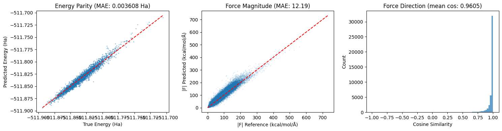

Autodifferentiable Force Prediction with MFML#
In the previous examples we used a KRR variant that worked for properties which were scalar. However, in many cases, one is interested in the use of models that can predict vector valued properties such as forces or molecular dipole moments. The next set of examples will demonstrate a few additions to the MFML-4-QC package that enable us to do this.
This example demonstrates how to predict molecular forces as the negative gradient of MFML-predicted energies, computed via automatic differentiation (backpropagation through the Coulomb matrix descriptor and kernel evaluation).
We will use the QeMFi nitrophenol dataset (5 SCF fidelities) for training. However, since the QeMFi dataset does not contain any forces for the molecules, we will compare predicted forces against DFT reference forces from the WS22 dataset. While this is not a compeltely correct comparison, we note that the QeMFi dataset is carved out as a subset of the WS22 dataset. Both use DFT for computations. For an example, this is merely to show functionality. In practice, you can also run a single fidelity KRR model with autodifferentiation for the forces.
Requirements: PyTorch (pip install torch).
Imports#
[1]:
import os
import numpy as np
import matplotlib.pyplot as plt
from mfml_qc.datasets import load_nitrophenol_data
from mfml_qc.mfml import ModelMFML
from mfml_qc.utils import build_hierarchy_arrays, top_down_subsetting
from mfml_qc.autodiff import (
DifferentiableMFML,
generate_coulomb_matrix,
predict_energies_and_forces,
)
HA_TO_KCAL = 627.509
# Path to WS22 dataset (not part of mfml_qc — download separately).
# Here we load from a local instance
WS22_PATH = path = os.path.expanduser("~/Datasets/WS22/ws22_nitrophenol.npz")
Load Data#
QeMFi provides multifidelity SCF energies (among other properties) for 15,000 geometries. WS22 provides DFT reference forces for the same geometries since QeMFi is a subset of the WS22 dataset. The ID array in QeMFi indexes directly into WS22, so forces can be looked up for the same molecular configurations.
[2]:
dataset = load_nitrophenol_data() # QeMFi dataset is included
R = dataset["R"] # (15000, 15, 3)
Z = dataset["Z"] # (15,)
X_CM = dataset["X_CM"] # (15000, 120)
SCF = dataset["SCF"] # (15000, 5) — energies in Hartrees
if not os.path.exists(WS22_PATH):
raise FileNotFoundError(
f"WS22 dataset not found at '{WS22_PATH}'. "
"Set WS22_PATH to the location of ws22_nitrophenol.npz."
)
ws22 = np.load(WS22_PATH)
ws22_ids = dataset["ID"]
F_ref_all = ws22["F"][ws22_ids] # (15000, 15, 3)
Train/Test Split and Hierarchy#
We use 12,000 geometries for training and 3,000 for testing. The multifidelity hierarchy is built from the 5 SCF energy columns with a scaling factor of 2.
[3]:
N_TRAIN = 12000
N_TEST = 3000
X_train = X_CM[:N_TRAIN]
X_test = X_CM[N_TRAIN : N_TRAIN + N_TEST]
R_test = R[N_TRAIN : N_TRAIN + N_TEST]
F_ref = F_ref_all[N_TRAIN : N_TRAIN + N_TEST]
data_train = np.column_stack([np.arange(N_TRAIN), SCF[:N_TRAIN]])
hierarchy_cols = [1, 2, 3, 4, 5] # lowest fidelity is stored first in QeMFi
y_trains, indexes, means = build_hierarchy_arrays(data_train, hierarchy_cols)
n_trains_target = [
1024,
512,
256,
128,
64,
] # 64 at the highest fidelity, 1024 at the lowest.
subset_y_trains, subset_indexes = top_down_subsetting(
y_trains, indexes, n_trains_target, seed=42
)
Train a standard MFML Model#
A standard MFML model is trained using the built-in KRR with a Gaussian kernel. This produces 2N-1 = 9 sub-models across 5 fidelity levels.
[4]:
mfml_model = ModelMFML(kernel="gaussian", sigma=250.0, reg=1e-10, p_bar=True)
mfml_model.train(
X_train_parent=X_train,
y_trains=subset_y_trains,
indexes=subset_indexes,
)
Extracting X_trains: 100%|█████████████████████████████████████████████████████████████████████████████████████████████████████████████████████████████████████████████████████| 5/5 [00:00<00:00, 13916.07it/s]
Extracting upper y_trains: 100%|███████████████████████████████████████████████████████████████████████████████████████████████████████████████████████████████████████████████| 5/5 [00:00<00:00, 85250.08it/s]
Extracting lower y_trains: 100%|████████████████████████████████████████████████████████████████████████████████████████████████████████████████████████████████████████████████| 4/4 [00:00<00:00, 1591.62it/s]
Training upper ML models...: 100%|████████████████████████████████████████████████████████████████████████████████████████████████████████████████████████████████████████████████| 5/5 [00:01<00:00, 3.61it/s]
Training lower ML models: 100%|███████████████████████████████████████████████████████████████████████████████████████████████████████████████████████████████████████████████████| 4/4 [00:00<00:00, 61.57it/s]
Wrap in Autodiff Evaluator and Predict Forces#
The trained MFML model is wrapped in a DifferentiableMFML evaluator, which stores the sub-model weights as PyTorch buffers. For each test geometry, the Coulomb matrix is computed differentiably, the energy is predicted, and forces are obtained as F = -∇E via backpropagation.
Predicted energies are un-centered using the highest-fidelity mean, and forces are converted from Ha/Å to kcal/mol/Å.
[5]:
evaluator = DifferentiableMFML.from_mfml_model(mfml_model)
pred_energies, pred_forces = predict_energies_and_forces(
evaluator, R_test, Z, descriptor_fn=generate_coulomb_matrix
)
pred_energies += means[-1]
pred_forces *= HA_TO_KCAL
Evaluate#
We compute the energy MAE against the highest-fidelity SCF values, the force magnitude MAE, and the mean cosine similarity of force vectors against WS22 DFT reference forces.
[6]:
energy_mae = np.mean(np.abs(pred_energies - SCF[N_TRAIN : N_TRAIN + N_TEST, -1]))
force_mag_pred = np.linalg.norm(pred_forces.reshape(-1, 3), axis=-1)
force_mag_ref = np.linalg.norm(F_ref.reshape(-1, 3), axis=-1)
force_mag_mae = np.mean(np.abs(force_mag_pred - force_mag_ref))
dot = np.sum(pred_forces.reshape(-1, 3) * F_ref.reshape(-1, 3), axis=-1)
denom = np.maximum(force_mag_pred * force_mag_ref, 1e-12)
cos_sim = np.clip(dot / denom, -1.0, 1.0)
Plot#
We will look at the energy parity, force magnitude parity, and a histogram of per-atom force cosine similarities.
[7]:
fig, (ax1, ax2, ax3) = plt.subplots(1, 3, figsize=(15, 4))
ax1.scatter(SCF[N_TRAIN : N_TRAIN + N_TEST, -1], pred_energies, s=2, alpha=0.3)
lims = [
SCF[N_TRAIN : N_TRAIN + N_TEST, -1].min(),
SCF[N_TRAIN : N_TRAIN + N_TEST, -1].max(),
]
ax1.plot(lims, lims, "r--")
ax1.set_xlabel("True Energy (Ha)")
ax1.set_ylabel("Predicted Energy (Ha)")
ax1.set_title(f"Energy Parity (MAE: {energy_mae:.6f} Ha)")
ax2.scatter(force_mag_ref, force_mag_pred, s=1, alpha=0.1)
lims = [0, max(force_mag_ref.max(), force_mag_pred.max())]
ax2.plot(lims, lims, "r--")
ax2.set_xlabel("|F| Reference (kcal/mol/Å)")
ax2.set_ylabel("|F| Predicted (kcal/mol/Å)")
ax2.set_title(f"Force Magnitude (MAE: {force_mag_mae:.2f})")
ax3.hist(cos_sim, bins=80, edgecolor="none", alpha=0.7)
ax3.set_xlabel("Cosine Similarity")
ax3.set_ylabel("Count")
ax3.set_title(f"Force Direction (mean cos: {np.mean(cos_sim):.4f})")
plt.tight_layout()
plt.show()
